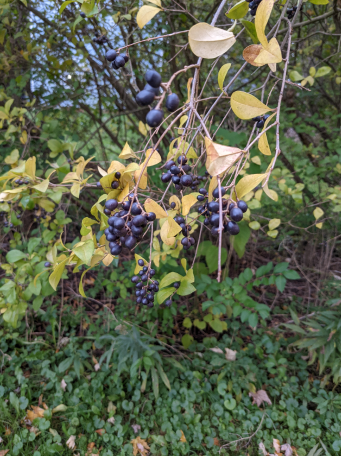

Enchanted Purple Pumpkin & Black Pickle Berries
These delicious berries are accessible to the garden pixies all year long until the first snow hits, causing the berries to die. Black pickle berries always grow near pickling cucumbers giving them their name.

The pixies have to stock up for the winter months and they preserve the berries in a sealed container with sweeteners and other materials to create a product much like jam or jelly.
The garden pixies also dry the berries out in the sun to create fruit “jerky” that is said to be very tasty. During the summer, the garden pixies also eat them fresh.